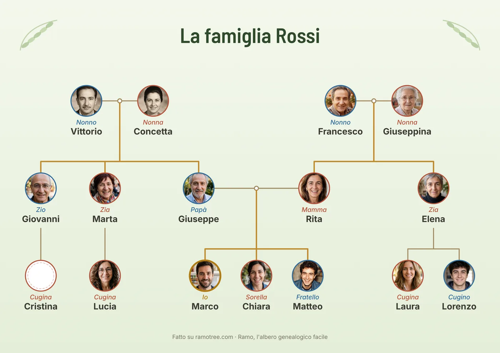

Come fare un albero genealogico, passo dopo passo
Fare l'albero della tua famiglia è più facile di quanto sembri: parti da quello che sai già, chiedi ai più anziani finché puoi e completalo un po' alla volta. Ecco i passi e un modello gratis da stampare.
Vuoi iniziare subito? Crea il tuo albero qui: nonni, genitori, zii, cugini e fratelli, con le foto se vuoi, e scaricalo in PDF o come immagine.

1. Parti da te
Scrivi il tuo nome, quando e dove sei nato. Poi i tuoi genitori e i tuoi fratelli, e poi i nonni. Annota tutto quello che sai a memoria, anche se incompleto: una data approssimativa («verso il 1930») è meglio di una casella vuota.
2. Chiedi alla famiglia
I più anziani sono la fonte migliore, e quello che non si chiede in tempo va perso. Alcune domande che funzionano:
- Come si chiamavano i tuoi genitori e i tuoi nonni, con il cognome da nubile?
- Dove e quando sono nati? Con chi si sono sposati, e dove?
- Quanti fratelli avevano? Che fine hanno fatto?
- Che lavoro facevano? Dove vivevano?
- Hai foto, lettere o santini di quel periodo?
Porta l'album di famiglia: i volti aiutano a ricordare. Fotografa le foto vecchie con il telefono e, se te lo permettono, registra la conversazione.
3. Cerca i dati che mancano
In casa spesso c'è più di quanto pensi: certificati di nascita o di matrimonio, santini, necrologi e foto con qualcosa scritto dietro. Fuori casa ci sono l'anagrafe e lo stato civile del comune, gli archivi parrocchiali per i periodi più antichi, il portale Antenati degli Archivi di Stato e FamilySearch, gratuito, con milioni di atti antichi già digitalizzati.
Annota da dove viene ogni dato. Quando due fonti non coincidono, saprai di quale fidarti.
4. Ordinalo: su carta o sul telefono
Un albero su carta va benissimo per iniziare. Ma l'albero cresce in fretta (fratelli, zii, cugini, coniugi…) e la carta diventa piccola. Con Ramo aggiungi ogni parente toccando la sua scheda e l'app sistema tutto da sola, con foto, date approssimative e la parentela di ognuno. Non serve un account, e se hai già un albero fatto con un altro programma, Ramo apre i file GEDCOM.
5. Condividilo con la famiglia
Manda l'albero in PDF al gruppo di famiglia: ognuno può completare il suo ramo con Ramo, gratis, e rimandartelo, e Ramo unisce le versioni senza doppioni. Quando è completo, stampalo in grande o regalalo incorniciato.
Altre guide